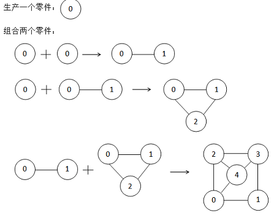
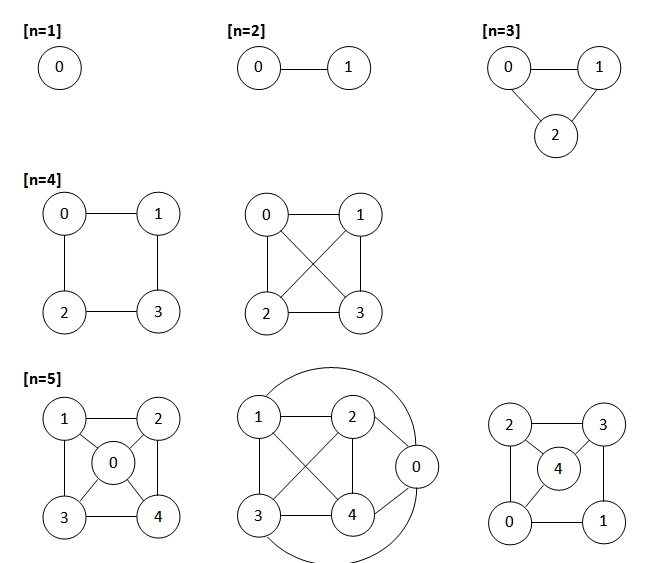

曾经发明了激光发生器的发明家SHTSC又公开了他的新发明：零件组装机--一种可以生产并组装零件的神秘装置。
一个零件是一张顶点由0 到n-1标号的无向图，零件组装机由以下两条功能。
（1）生产一个仅有一个顶点标号为0而没有边的零件。
（2）组合两个已有的零件G1，G2，且G2的顶点数m>=G1的顶点数n，得到新的零件G。G的顶点集合是G1、G2顶点集合的并
集，并且G2的顶点i(0<=i<m)被重新标号为n+i。G的边集是G1、G2边集的并集再对所有标号为a(a>=n)的顶点添加一
条连接(a,a mod n)的无向边。

现在SHTSC正在思考，对于一个给定的零件，能否由零件组装机生产组装得到。注意：零件是带标号的，这意味着
两个零件即使仅有标号不同也被视为不同的零件。为了帮助你理解问题，SHTSC特地给了你顶点数<=5的零件的图例。
